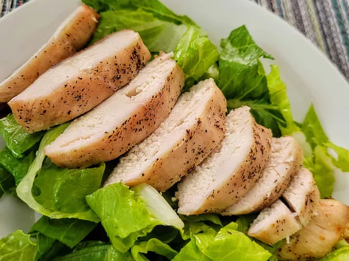

Basic Broiled Chicken Breasts

Description
Broil chicken breasts for a simple but delicious way to prepare chicken. Extra-virgin olive oil and generous amounts of salt and pepper make for a savory chicken breast that is crispy on the outside and juicy on the inside.
Ingredients
- 3 tablespoons extra-virgin olive oil
- 4 bone-in chicken breast halves with skin
- 2 teaspoons kosher salt
- 1 teaspoon freshly ground black pepper
Steps
- Set an oven rack about 6 inches from the heat source and preheat the oven's broiler. Rub olive oil over each chicken breast, then season both sides with salt and black pepper. Place the chicken skin-side down on a broiling pan.
- Broil in the preheated oven for 10 minutes, then flip the chicken breast skin-side up. Continue broiling until no longer pink at the bone and the juices run clear, about 10 minutes more. An instant-read thermometer inserted near the bone should read 165 degrees F (74 degrees C). Remove from the oven and allow to rest for 5 minutes before serving.
Home